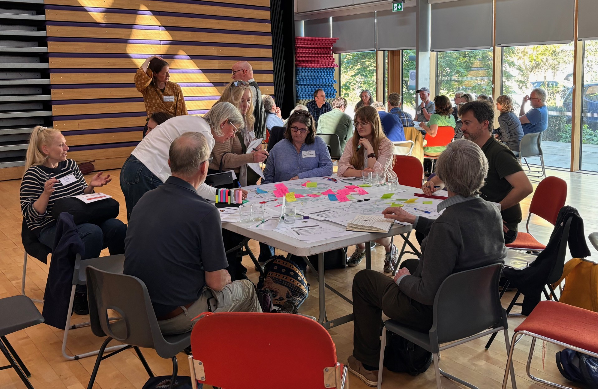
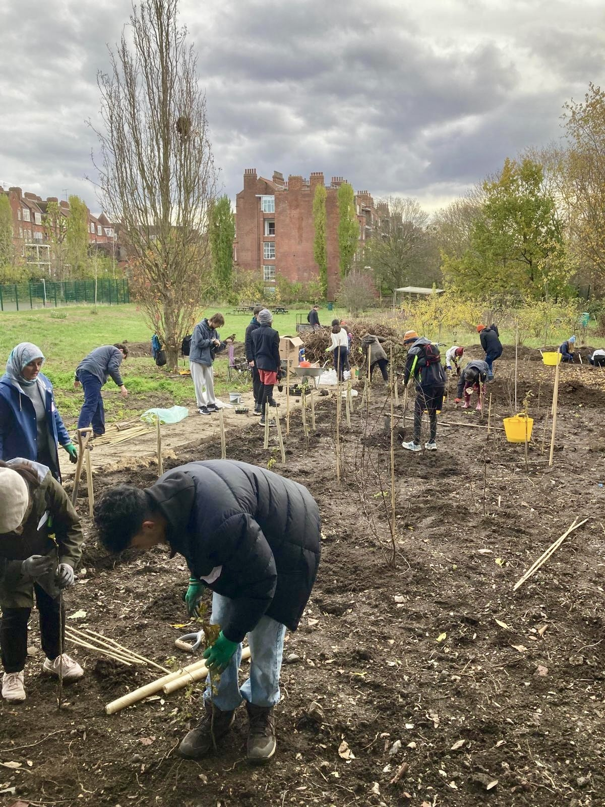

Connecting people and projects
More than 80 people from around 60 organisations came together to support nature recovery across North London.
 Nature
NatureConnecting communities, restoring wildlife
Nature North London brings organisations and communities together to strengthen habitats and wildlife corridors radiating out from Hampstead Heath.
A living network
We are mapping key stepping stones and biodiversity corridors that already exist across North London and – in collaboration with our local councils – finding fresh ways to fill the gaps between them. Our aim is to build a strong, collective voice for nature and, in effect, create a joined-up urban nature reserve which will improve biodiversity, air quality, flood resilience and climate adaption across our area.
Our events
More than 80 people from around 60 organisations came together to support nature recovery across North London.

A practical session exploring the places, partnerships and actions that can help nature move through the city.

Local action
From practical planting days to shared mapping, the network connects people who are making space for wildlife.
See the network in actionStay connected
Hear about events, resources, member news and opportunities to take part.